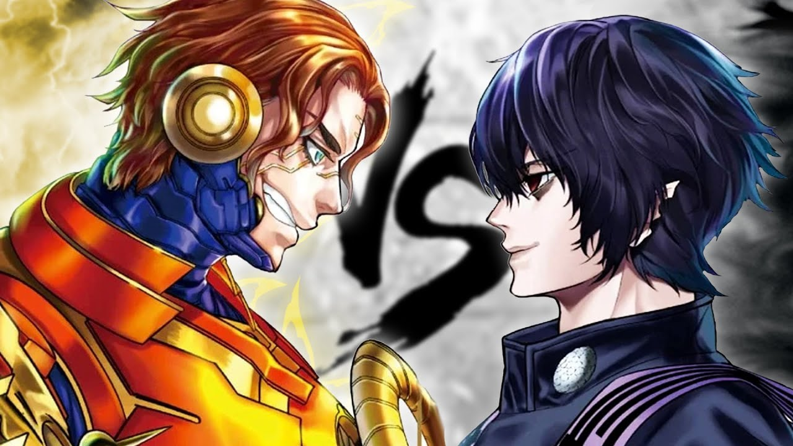

La mejor pelea de todo Shuumatsu
En el capítulo 75 del manga de “Shuumatsu no Valkyrie” hemos tenido la continuación de la épica batalla entre Nikola Tesla, defendiendo a la humanidad, y Belcebú, el enviado de Satanás, en busca de una victoria que les permita seguir en carrera por ganar el Ragnarok; sin embargo, cuando parecía que para este mes de febrero se definía al ganador, nos llevamos otra sorpresa, todo se consume en marzo.
- Belcebu
- Nikola Tesla
Peleadores de esta ronda
En el mes de marzo, específicamente el 25 de ese mes, podremos saber quién será el ganador en “Record of Ragnarok” ya que se ha confirmado que el capítulo 76 de “Shuumatsu no Valkyrie” nos mostrará al humano o dios que se ha llevado el triunfo en la pelea del fin del mundo.
